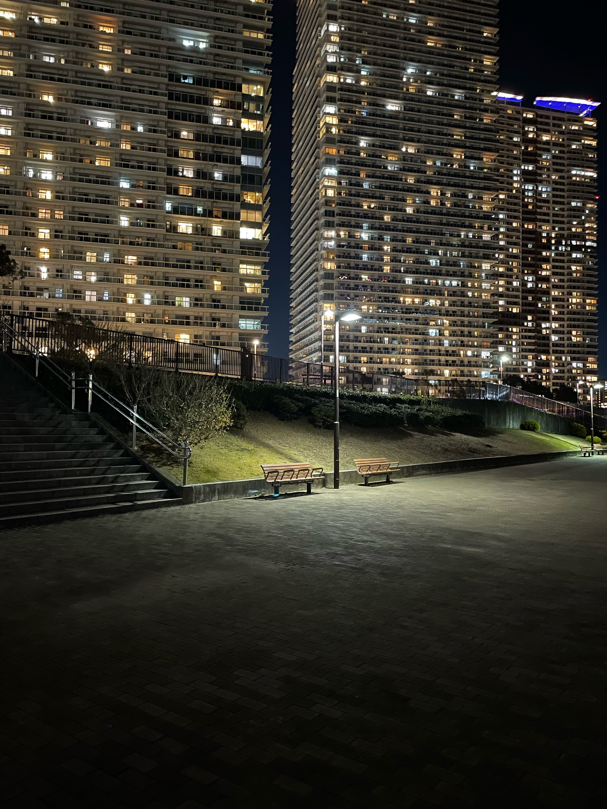

#PROFILE
- NAME 三田村 季
- BIRTH DATE 2005年9月23日 (現在20歳)
- SCHOOL 日本工学院専門学校 ITスペシャリスト科 セキュリティ専攻 3年
- CIRCLE Internal Sandbox
- GOAL 組込みエンジニア、インフラエンジニア
- LICENSE 2025年2月 基本情報技術者試験 合格
> VISION
セキュリティ専攻で培った視点を活かし、社会基盤を支えるセキュアで絶対に止まらないインフラ環境と組込みシステムを構築できるエンジニアを目指しています。
単にコードを書くだけではなく、「ネットワークのルールに従って動くインフラの本質」や「Make/GDBを用いた泥臭いビルド・デバッグ」など、低レイヤの仕組みを深く理解し、原因究明から逃げない姿勢が強みです。また、AtCoder等を通じて実践的なアルゴリズム構築力の向上にも努めています。
将来的には、持ち前のチャレンジ精神とチームワークを活かし、インフラと組込みの知見を掛け合わせることで、開発と運用の両面から現場の課題を解決できる人材として活躍したいと考えています。
> HOBBIES & INTERESTS
📷 写真撮影（Photography）
CAMERA / OPTICS / COMPOSITION夜の風景や建造物、日常の一瞬を切り取ることが好きです。あまり遠出しないので東京の風景ばかりですが、来年の1月に海外研修でシンガポールに行くので現地での夜の風景をカメラに収めたいです。

Photo #01
Photo #02
Photo #03
#TECH STACK
</> LANGUAGES
C / C++ / Python / PHP
OpenCV / mediapipe / MySQL / AtCoder
🗄 INFRASTRUCTURE
Linux (CentOS8, AlmaLinux10, Fedora41)
httpd / MariaDB / Postfix / bind-chroot
⚙ DEV TOOLS & ENVIRONMENT
Make
GDB
Git / GitHub
VS Code
JetBrains(Clion)